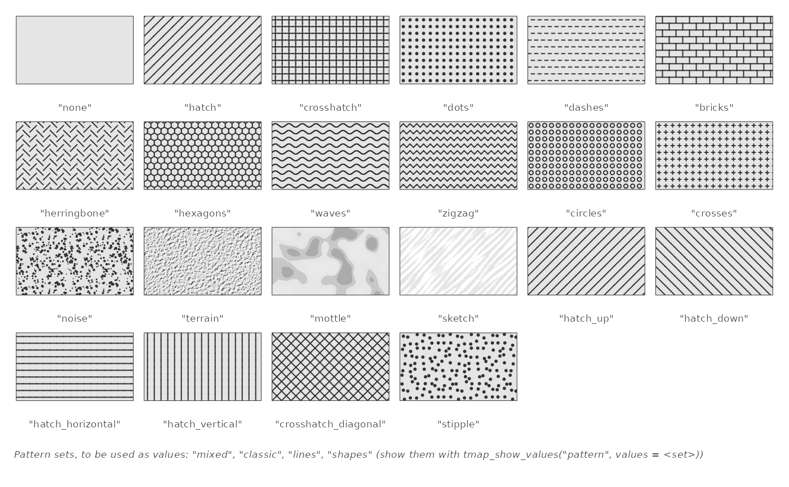
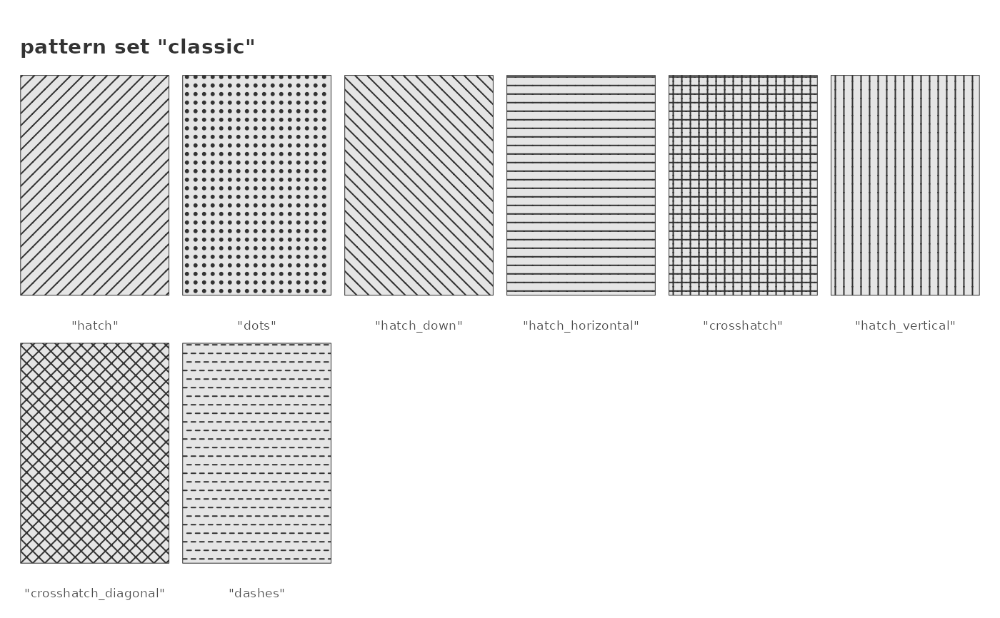
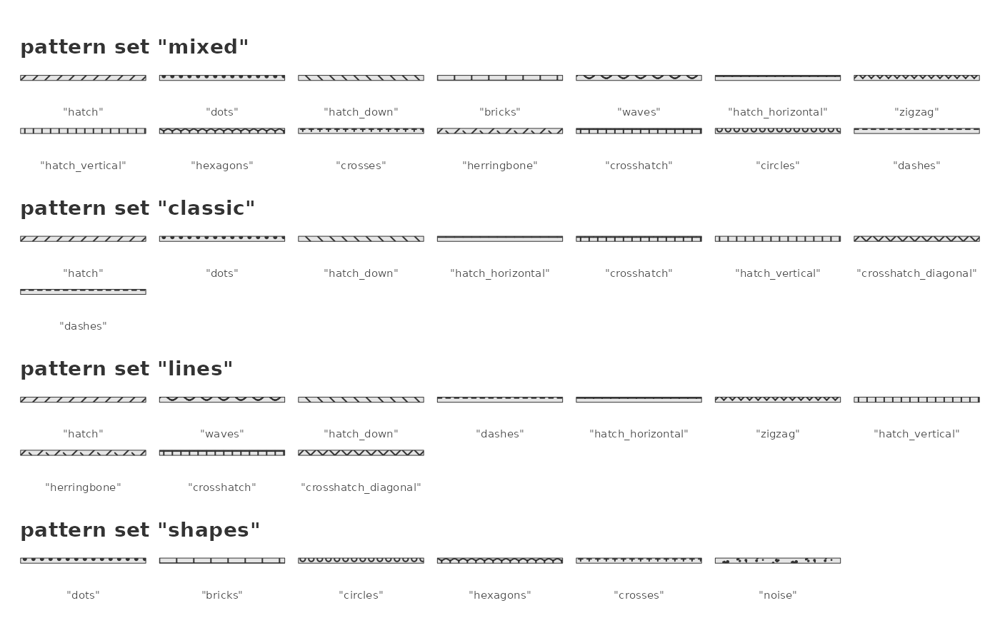
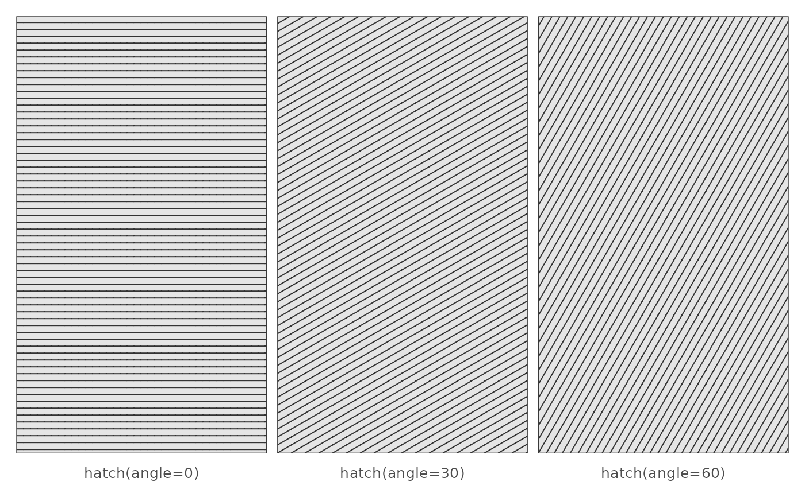
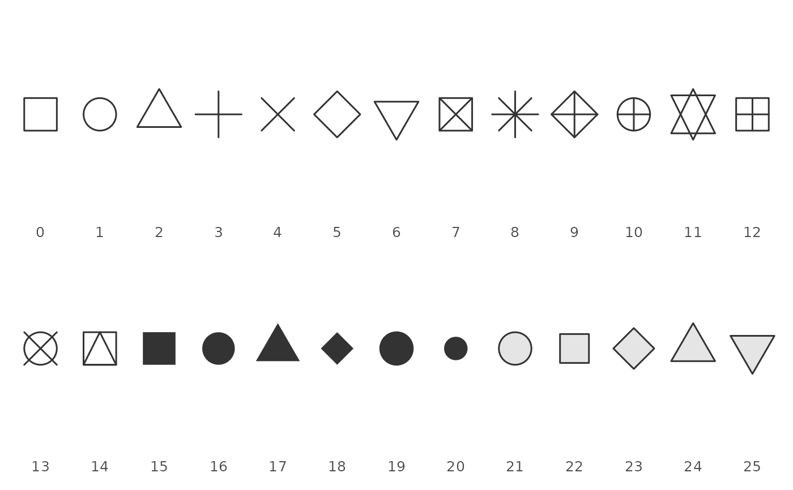
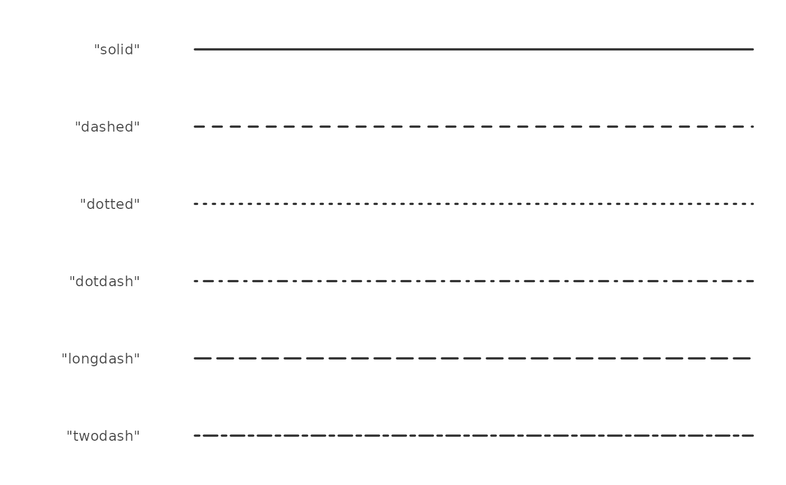
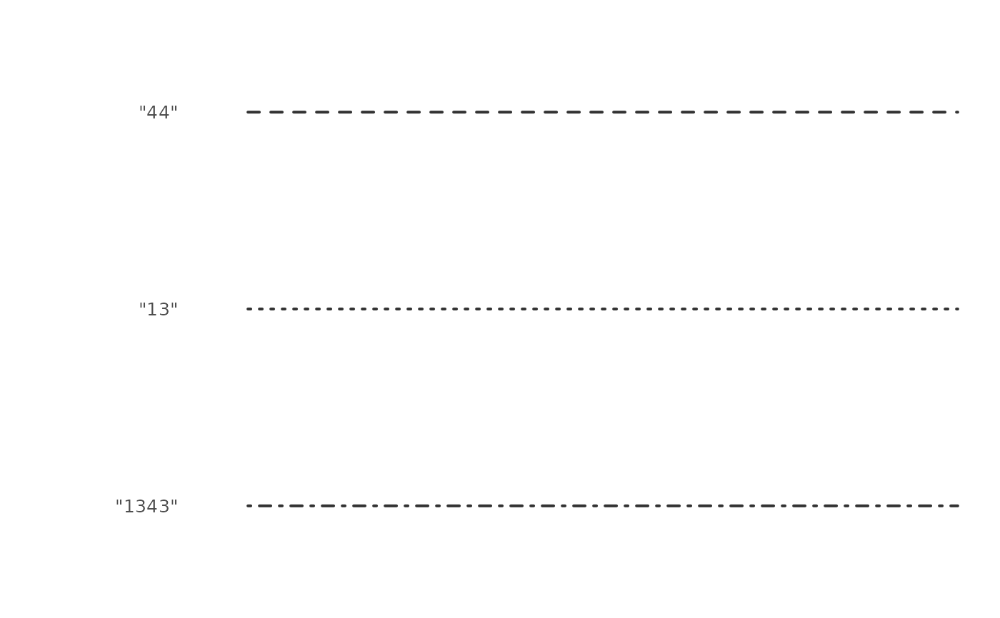
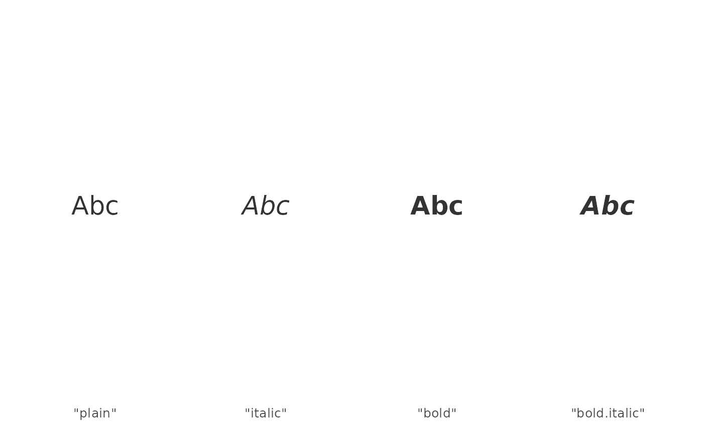

Show the available values of categorical map variables
Source:R/tmap_show_values.R
tmap_show_values.RdDraws the values of a categorical map variable (other than color), each labeled with the code
that specifies it. These codes can be used as constant values (e.g. tm_symbols(shape = 22))
and as values of a scale (e.g. tm_scale_categorical(values = c("hatch", "dots"))). For
color palettes, see cols4all::c4a_gui().
Usage
tmap_show_values(
variable = c("pattern", "shape", "lty", "fontface"),
values = NULL,
col = "grey20",
fill = "grey90",
ncol = NA
)Arguments
- variable
the map variable: one of
"pattern"(seetm_polygons()),"shape"(seetm_symbols()),"lty"(line type, see e.g.tm_lines()), and"fontface"(seetm_text()).- values
the values to show. By default (
NULL), all available values. See details.- col
the color of the lines, the borders of symbols, the patterns, and the text.
- fill
the fill color of polygons (
"pattern") and of the symbols with a fill (shapes 21 to 25).- ncol
number of columns. By default, determined by the number of values.
Value
The values shown (invisibly), as codes that can be used as values of a scale. When several pattern sets are shown, a list with one element per set.
Details
By default, all available values are shown. With values, specific values are shown instead,
in the same form as the values argument of a scale, such as tm_scale_categorical():
variable | Available values | Other values |
"pattern" | pattern types and shortcuts (see tm_patterns()) | pattern sets: "mixed" (the default of scales), "classic", "lines", and "shapes"; tm_patterns() specifications |
"shape" | 0 to 25 (see graphics::points()) | |
"lty" | "solid", "dashed", "dotted", "dotdash", "longdash", and "twodash" | strings of 2, 4, 6, or 8 hexadecimal digits, the lengths of the dashes and gaps (e.g. "44"; see graphics::par()) |
"fontface" | "plain", "italic", "bold", and "bold.italic" |
A pattern set is shown as a group of patterns, in the order in which they are used: a scale
with n categories takes the first n patterns of the set. Several sets can be shown at
once, e.g. all sets with values = c("mixed", "classic", "lines", "shapes").
Examples
# all pattern types and shortcuts
tmap_show_values("pattern")

# a pattern set, in the order of use, and all pattern sets
tmap_show_values("pattern", values = "classic")

tmap_show_values("pattern", values = c("mixed", "classic", "lines", "shapes"))

# specific patterns
tmap_show_values("pattern", values = tm_patterns("hatch", angle = c(0, 30, 60)))

tmap_show_values("shape")

tmap_show_values("lty")

tmap_show_values("lty", values = c("44", "13", "1343"))

tmap_show_values("fontface")
